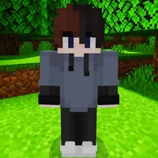

Фьюджин — это загадочный персонаж из "Новых похождений", первого сезона Майнкрафт-сериала Данила. Он является одним из ключевых героев, который постоянно взаимодействует с главным персонажем, Данилом, предлагая ему различные миссии и вовлекая его в странные и опасные приключения. Во 2 серии Н.П. Фьюджин шпионил за Данилом. Это определённо придаёт его образу таинственности.
Внешний вид и характер▼
Фьюджин — модный молодой человек с типичной молодёжной внешностью. Половина его волос коричневая, а другая — тёмная, что подчёркивает его стиль и уникальность. У него голубые глаза, он носит серое худи, чёрные штаны и белые кроссовки, что добавляет ему современный и непринуждённый вид. В то же время его поведение остаётся загадочным: он часто шпионит за Данилом и поддерживает его в трудные моменты, не раскрывая полностью своих намерений.
Роль в сюжете▼
Фьюджин действует как проводник в мире "Новых похождений", помогая Данилу адаптироваться к окружению и выполняя функции наставника. Однако его истинные мотивы остаются неясными. В одной серии он шпионил за главным героем, что создаёт вокруг него атмосферу подозрительности. Он также играет важную роль в финальной битве, помогая Данилу на его пути к победе. Взаимоотношения между Фьюджином и Данилом развиваются на фоне событий сериала, и к финалу становится ясно, что их связи глубже, чем казалось на первый взгляд.
Итог▼
Фьюджин остаётся одним из самых загадочных персонажей "Новых похождений". Его связь с главным героем и участие в ключевых моментах сериала делают его неотъемлемой частью сюжета, несмотря на его скрытные мотивы.